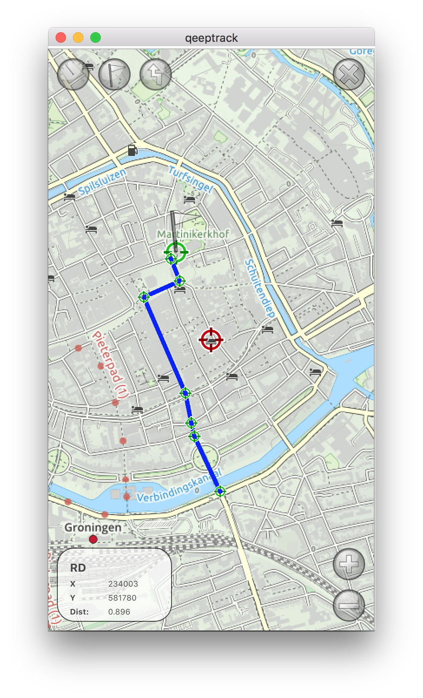
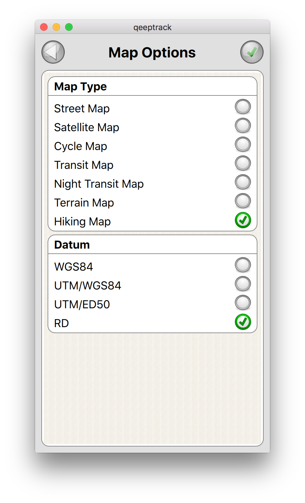
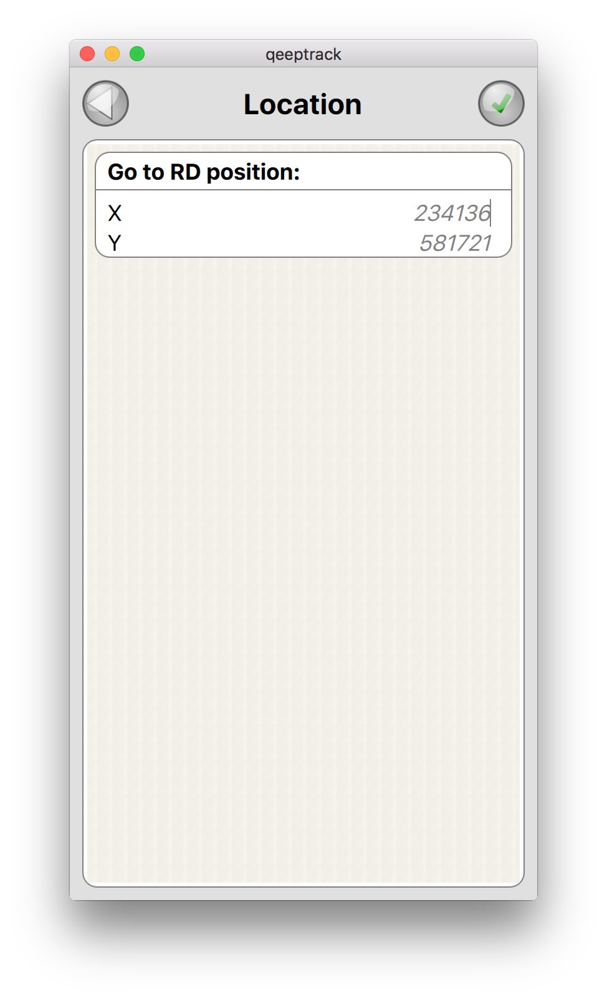

Advanced GPS dashboard with altimeter, speedometer and compass.
|  | The mapview will show your current location on the selected map, and allow for zooming / panning. On the bottom left of the screen you find a small window describing the current location in terms of the currently selected datum, hence this can be X/Y, Northing/Easting or Longitude/Latitude. Clicking this window triggers an option screen to appear, that enables selecting a map type and datum. In the next section this is described in more detail. |
|  | The map options screen shows a list of available map types, as well as a list of available datums. The currently selected map and datum are highlighted, and can be changed in this view. Press the green confirm button on the right top, to confirm your selection. |
|  | A longpress on the center locator of the MapView, triggers a location selection dialog, this allows for inputting a new center location in the currently selected datum format. This makes it easier to reposition the map on a location that is taken from an external source, e.g. a paper map, or a website. |